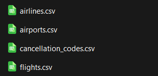
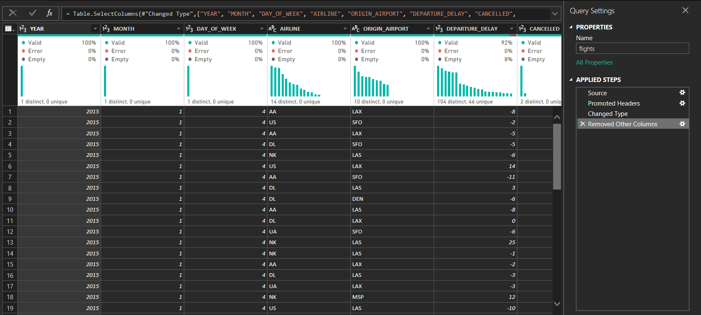
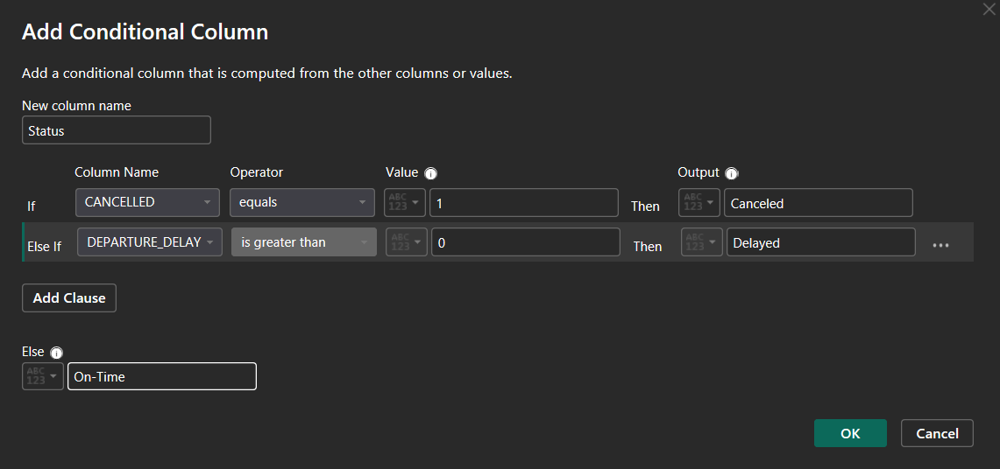
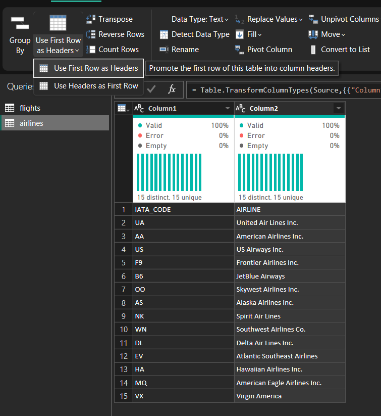
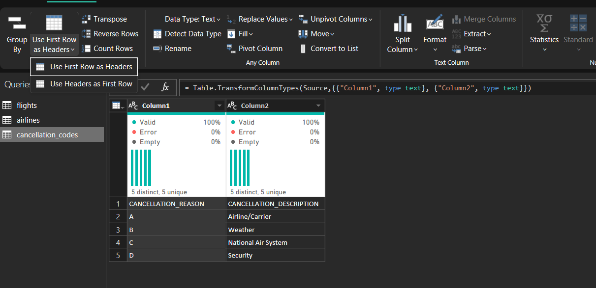
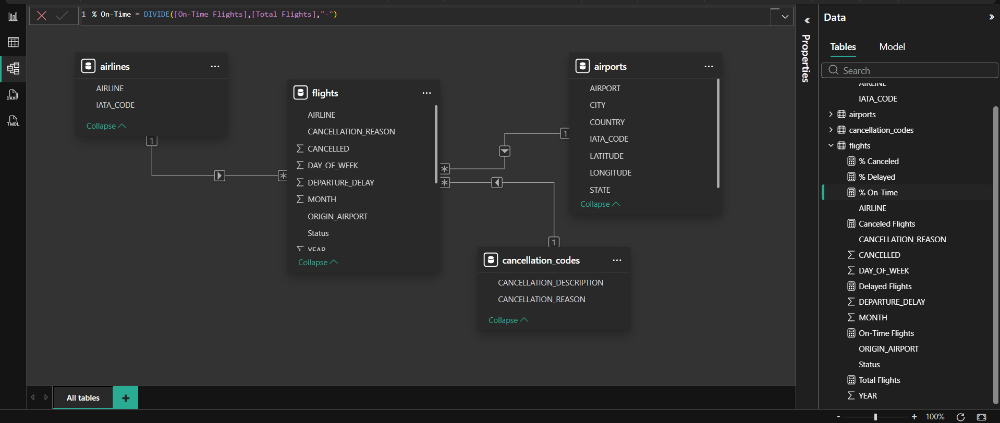
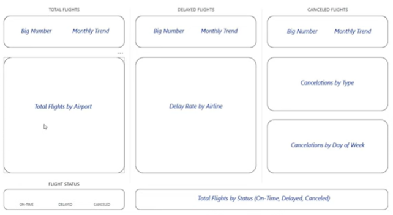
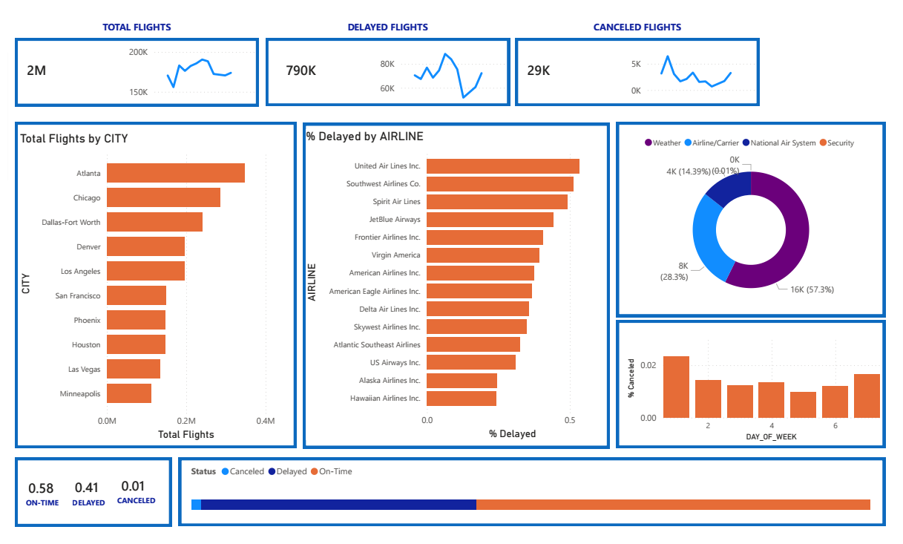

Understanding Flight Status using PowerBi Dashboard
The goal of this Data Analysis project is to understand which flights are getting delayed or cancelled.

Skills utilized: Microsoft PowerBI, Data Analysis, Dashboard Creation, Data Simplification
The Project Scenario
Tasked to use the airport and airline data to identify and understand which flights are on-time, delayed and cancelled and the reason for those.
Contents
IMPORTING OF DATASETS

TRANSFORMING OF DATASETS
flights.csv
ISOLATING COLUMNS THAT ARE RELEVANT
- YEAR
- MONTH
- DAY_OF_WEEK
- AIRLINE
- ORIGIN_AIRPORT
- DEPARTURE_DELAY
- CANCELLED
- CANCELLATION_REASON

ADD CONDITIONAL COLUMNS
- STATUS COLUMN:

- STATUS COLUMN:
airlines.csv, cancellation_codes.csv
PROMOTE FIRST ROW TO HEADERS (Use First Row as Headers)


BUILDING A RELATIONAL MODEL

| PRIMARY KEY COLUMN | FOREIGN KEY COLUMN | CARDINALITY |
| airlines.IATA_CODE | flights.AIRLINE | One to Many (1:*) |
| airports.IATA_CODE | flights.ORIGIN_AIRPORT | One to Many (1:*) |
| cancellation_codes.CANCELLATION_REASON | flights.CANCELLATION_REASON | One to Many (1:*) |
CREATING DAX (DATA ANALYSIS EXPRESSIONS) MEASURES
The goal is to enhance the data model to create new fields and metrics to support the analysis.
| COLUMN NAME | TABLE | FORMULA |
| Total Flights | flights | Total Flights = COUNTROWS(flights) |
| Canceled Flights | flights | Canceled Flights = CALCULATE([Total Flights],flights[Status]="Canceled") |
| Delayed Flights | flights | Delayed Flights = CALCULATE([Total Flights],flights[Status]="Delayed") |
| On-Time Flights | flights | Canceled Flights = CALCULATE([Total Flights],flights[Status]="On-Time") |
| % Canceled | flights | % Canceled = DIVIDE([Canceled Flights],[Total Flights],"-") |
| % Delayed | flights | % Delayed = DIVIDE([Delayed Flights],[Total Flights],"-") |
| % On-Time | flights | % On-Time = DIVIDE([On-Time Flights],[Total Flights],"-") |
CREATING THE DASHBOARD
For creating the dashboard, we may use the visualization guide for a clear and logical flow:

| CHART NAME | CHART TYPE | COLUMNS USED |
| TOTAL FLIGHTS - Big Number | CARD | flights.Total Flights |
| TOTAL FLIGHTS - Monthly Trend | LINE CHART |
|
| DELAYED FLIGHTS - Big Number | CARD | flights.Delayed Flights |
| DELAYED FLIGHTS - Monthly Trend | LINE CHART |
|
| CANCELED FLIGHTS - Big Number | CARD | flights.Canceled Flights |
| CANCELED FLIGHTS - Monthly Trend | LINE CHART |
|
| FLIGHT STATUS - ON-TIME | CARD | flights.% On-Time |
| FLIGHT STATUS - DELAYED | CARD | flights.% Delayed |
| FLIGHT STATUS - CANCELED | CARD | flights.% Canceled |
| Total Flights by Airport | BAR CHART |
|
| Delay Rate by Airline | BAR CHART |
|
| Cancelations by Type | DONUT CHART |
|
| Cancelations by Day of Week Trend | COLUMN CHART |
|
| Total Flights by Status (On-Time, Delayed, Canceled) | STACKED BAR CHART |
|
DASHBOARD OUTPUT

PROJECT LINK GITHUB
Kindly see the link for the project itself via github: https://github.com/carlnera1/powerbi-flight-dashboard